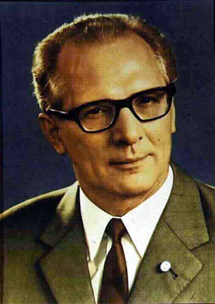

Home
Welcome to the
ERICH
HONECKER
Internet
Library

"The States assembled in Helsinki confirm the turn from 'cold war' to détente in Europe."
— Erich Honecker, Address to the CSCE, Helsinki 1975
Featured work
Letter to Yasser Arafat
C O N T E N T S
--1975--
Address to the Third Stage of the Conference on Security and Co-Operation in Europe
--1977--
Message to the Chairman of the UN Anti-Apartheid Committee on the occasion of the International Day for the Elimination of Racial Discrimination
Message of greetings to the World Conference Against Apartheid, Racism and Colonialism in Southern Africa
Message of greetings to the World Conference for Action against Apartheid
--1980--
Speech at the Meeting of Party and State Leaders of the Warsaw Pact
--1983--
Letter to Yasser Arafat
--1984--
Speech at the Banquet Given in Honour of Comrade Kim Il Sung
Speech at the Banquet Given by Comrade Kim Il Sung
Speech at the GDR-DPRK Friendship Mass Meeting